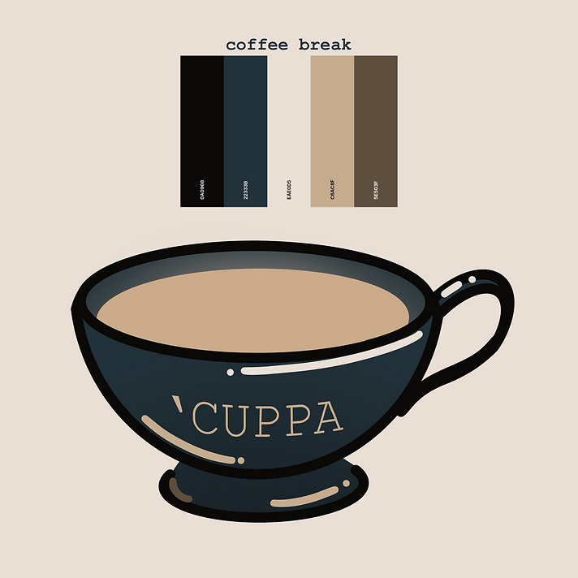
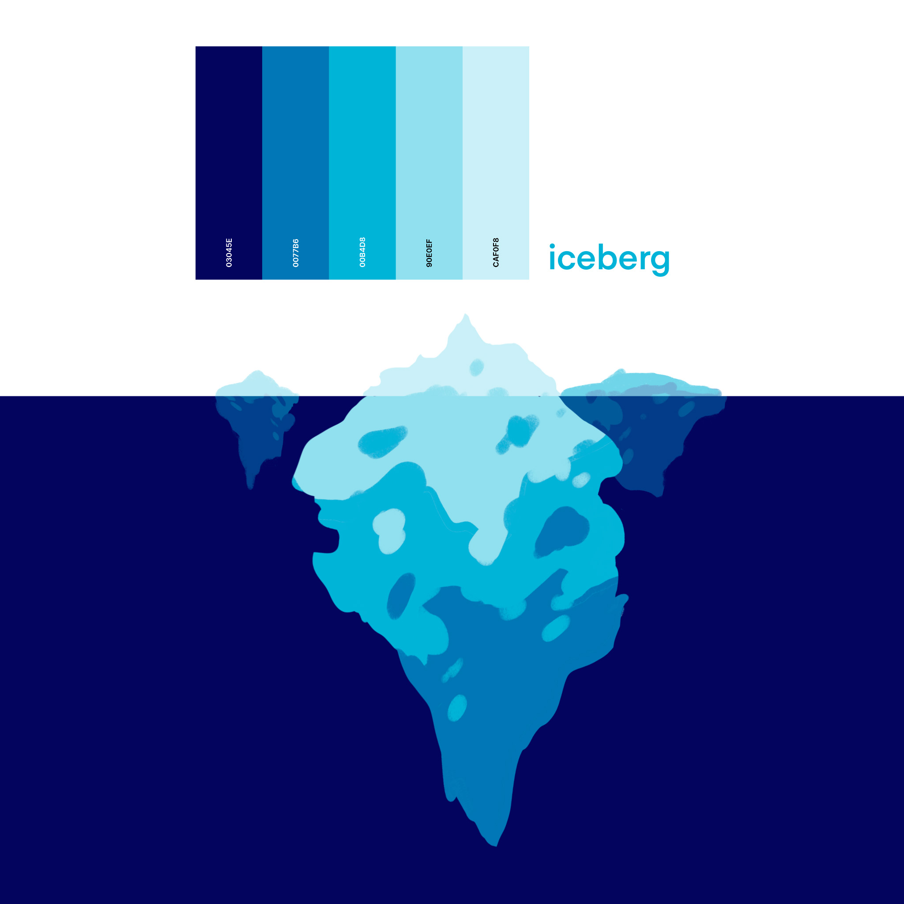
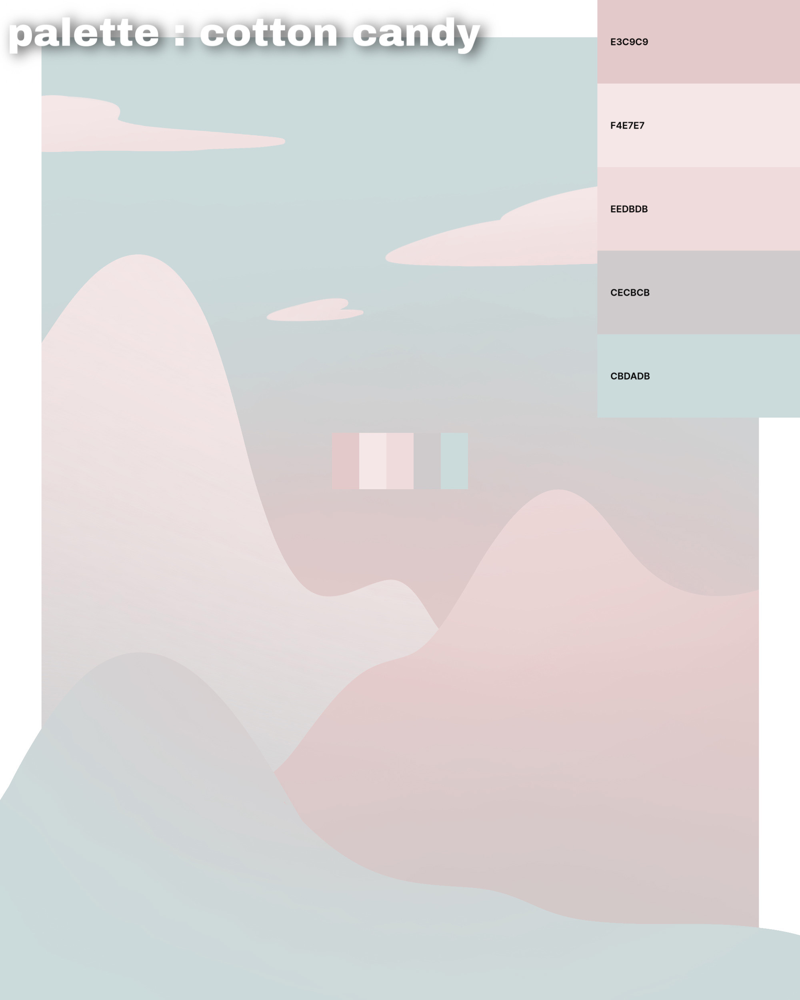
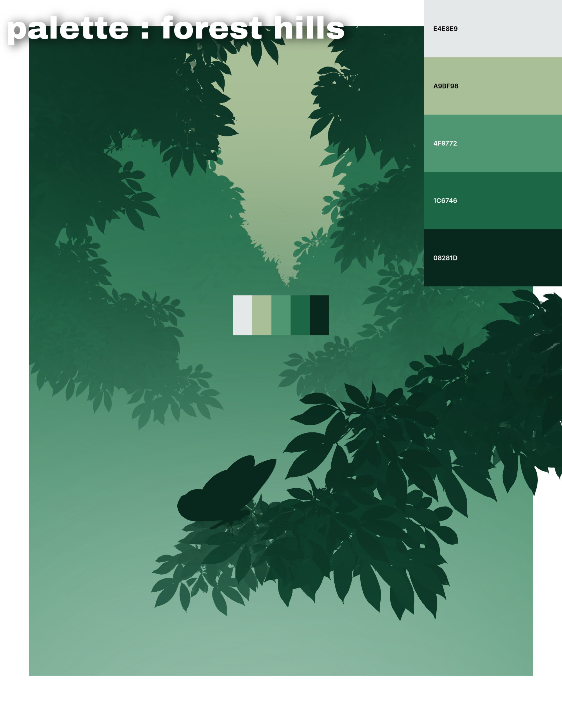
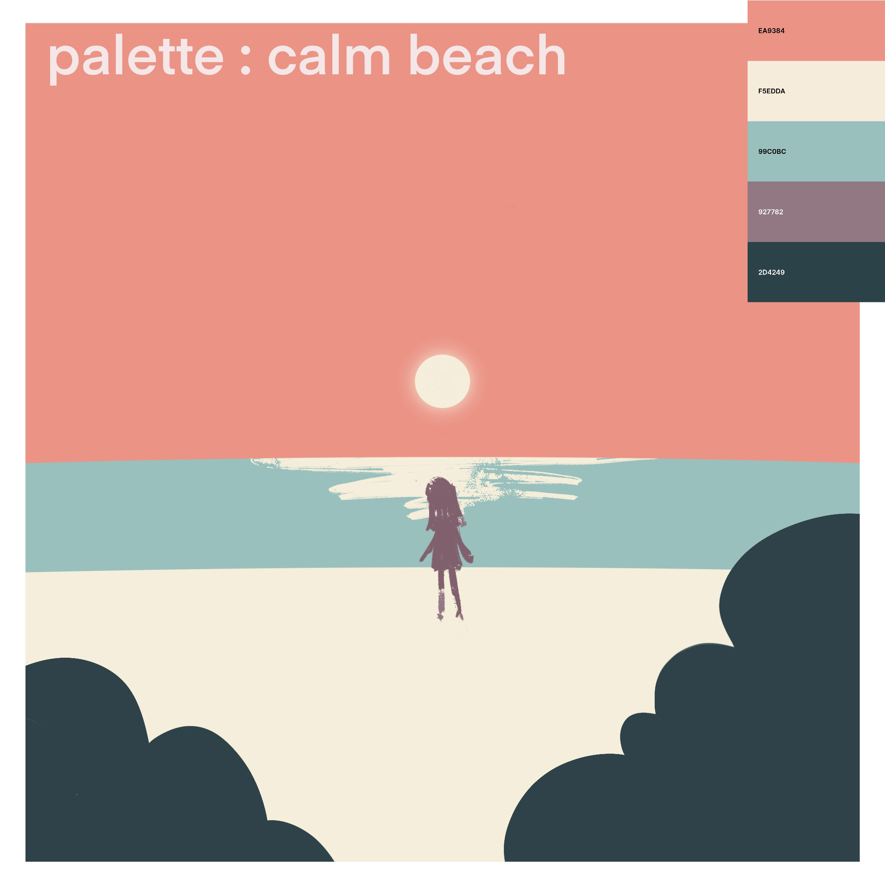
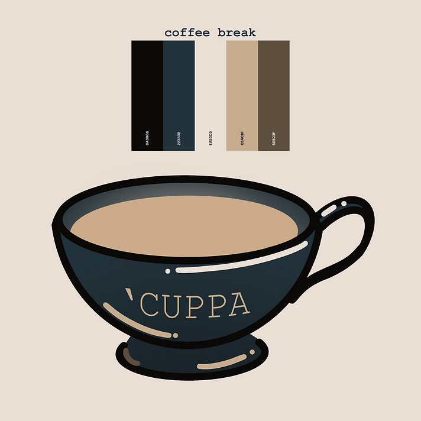
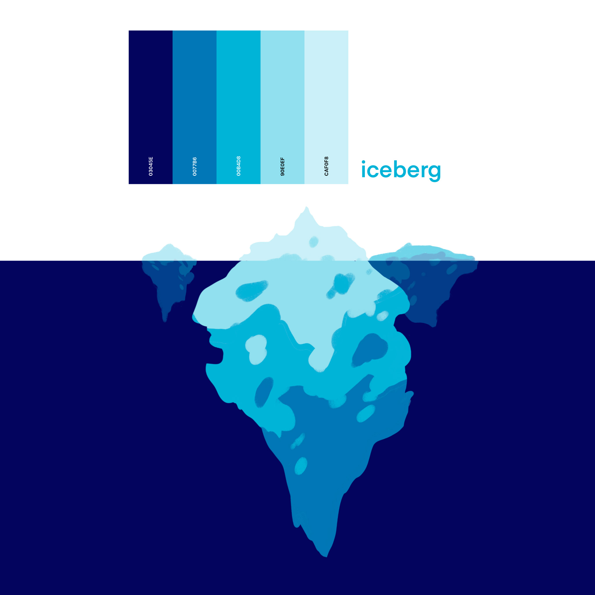
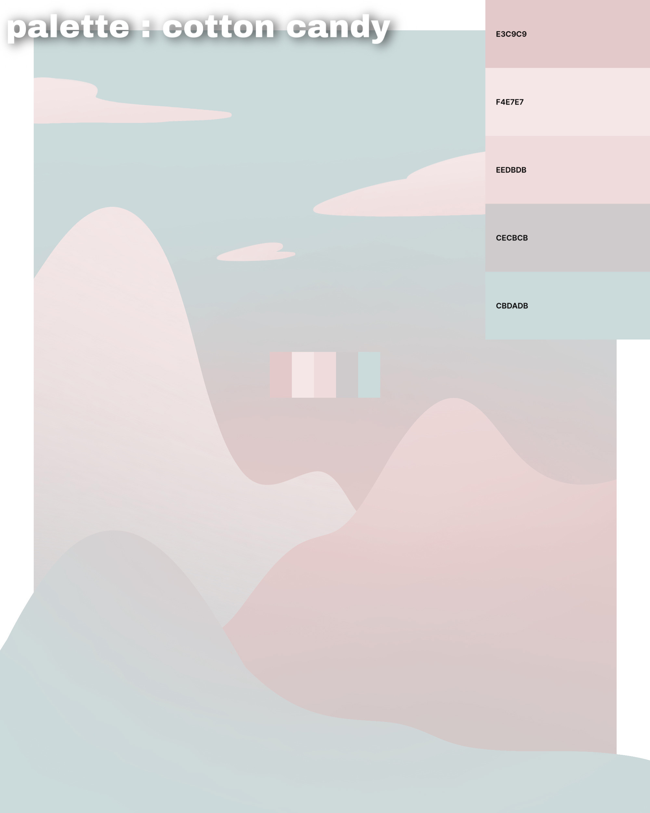
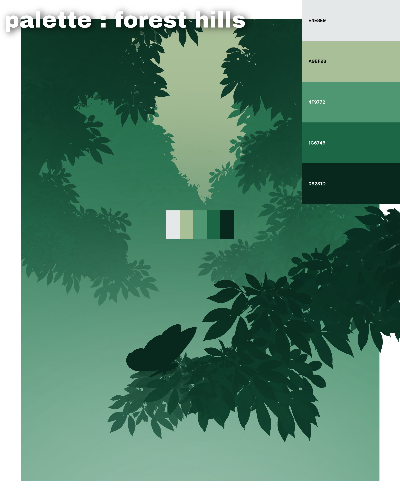
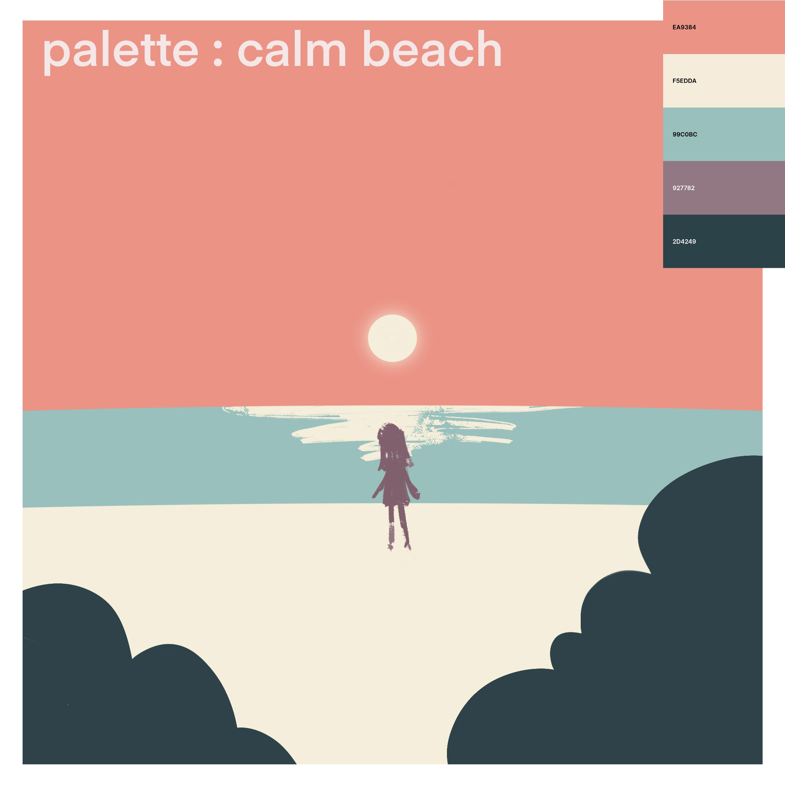

Color Studies
I embraced the challenge of using randomly generated color palettes to guide the creative process. I allowed the palette to dictate the imagery, encouraging a deeper exploration of color relationships and associations.
Through this process, I aimed to show how color, when left to chance, can inspire both the subject matter and the mood of the piece, while revealing the surprising ways in which color influences perception and storytelling in art.
view collection
 








